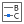

Originは、4つの凡例オブジェクトと2つのスケールオブジェクトがあります。このページでは凡例オブジェクトに焦点を当てます。スケールオブジェクトについての情報は、カラースケールとバブルスケールを確認してください。
| データプロットの凡例 | カテゴリー凡例 | ポイントごとの凡例 | ボックスチャートの内容の凡例 |
|---|---|---|---|
|
|
|
上の4つのグラフ凡例は、以下の要素を持ちます。
グラフ凡例は、グラフページに自動的に作成される特別なテキストオブジェクトです。凡例オブジェクトには特別な名前 "Legend" が付いており、LabTalk表記を使用してOriginプロジェクトデータにプログラミング的にリンクされています。凡例オブジェクトを編集しなければ、この表記は表示されません。通常、シンボルや凡例テキストなどの「解釈された形」で表示されます。
下図は、凡例のオブジェクトプロパティダイアログボックスで、中央のパネルにはLabTalk表記を表示し、下部パネルに実際に凡例に表示される内容（LabTalk表記が解釈されたもの）を示します。
凡例シンボルとテキストを作成するには、ダイアログボックスの設定と組み合わせてプロット関連のメタデータを使用することをお勧めします。設定方法については、次を参照してください。
しかし、このようなプログラム化された凡例の使用が制限されているわけではありません。凡例オブジェクトを手作業で編集する方法が楽な場合もあります。凡例はテキストオブジェクトなので、次に示すテキストオブジェクト共通の方法で編集できます。
凡例のシンボルの上でダブルクリックして、作図の詳細ダイアログを開きます。凡例のテキストの上で、Ctrlキーを押しながらダブルクリックして、凡例ダイアログを開きます。 |
凡例の編集専用のミニツールバーがあります。使用可能なボタンは、プロット/凡例のタイプによって異なります。

また、凡例を右クリックしてショートカットメニュー開き、凡例を編集することもできます。
| 作業 | ミニツールバーの使用 | 他のコントロール | ||
|---|---|---|---|---|
| 凡例オブジェクト全体を削除 | Deleteキーまたは削除ショートカットメニュー | |||
| 凡例ボックスに背景を追加 | オブジェクトの塗り色ボタン | |||
| 凡例ボックスの枠を表示/非表示 | スタイルツールバーの枠ボタン | |||
| 枠線の太さや色を変更 | スタイルツールバーの線/境界色ボタン および 線/境界の太さリスト
| |||
| 凡例のサイズを変更 | 凡例オブジェクトを選択し、選択ハンドルの1つをドラッグします。 | |||
| 凡例エントリを整列 | 水平に配置 |
| ||
| 凡例の内容と背景（枠）の間の余白を調整 | 凡例オブジェクトの外側の端をポイントし、ポインターが「手」になったら、1回クリックしてハンドルを表示します。ハンドルをドラッグして余白を追加または削除します。
| |||
| 凡例シンボルの幅を広くする | シンボルの幅を広くボタン および シンボルの幅を狭くボタン |
作図の詳細ダイアログの凡例/タイトルタブ凡例シンボルの幅 (フォント幅の%) | ||
| 凡例の行の間隔を変更する | テキストオブジェクト- Legendダイアログのテキストタブの行間隔(%)リスト | |||
| シンボルサイズを調整 | シンボルサイズを大きくボタン |
テキストオブジェクト- Legendダイアログのシンボルタブを開き、散布図のシンボルサイズを設定します。
| ||
| 凡例シンボルの線の太さを変更 | 線をくボタン |
テキストオブジェクト- Legendダイアログのシンボルタブを開き、線の太さを設定します。
| ||
| 凡例テキストのフォーマット変更 | フォント設定、フォントサイズ、フォントサイズを大きく、フォントサイズを小さく、フォントの色ボタン | 書式ツールバー | ||
| 凡例のテキストカラーをシンボルカラーに揃える | フォントの色 ボタン |
| ||
| 凡例にシンボルやギリシャ文字などの特殊文字を追加する | 詳細ボタン |
| ||
| 凡例内の項目を逆順にする | 逆順ボタン |
| ||
| プロット/特別なポイントを追加または削除したときに凡例を更新 | 凡例を再構成 ボタン  |
| ||
| 複数レイヤをひとつの凡例にまとめる | 凡例: 凡例を更新ショートカットメニューのlegendupdateダイアログで、適用対象をページ全体にし、更新モードを再構成して、凡例を全てのページ用の1つの凡例にします。 | |||
| 凡例項目の表示/非表示 | 表示/非表示ボタン |
凡例: 非表示プロットの凡例を隠す、凡例: フィット曲線の凡例を隠す、凡例: 関数グラフの凡例を非表示にするショートカットメニュー | ||
| 凡例シンボルを非表示にする | 表示/非表示ボタン |
凡例: 凡例シンボルを非表示にするショートカットメニュー | ||
| アクティブデータセットの標識を表示 | アクティブデータセットの標識ボタン |
| ||
| 凡例テキストをプロットに接続 | プロットに付けるボタン |
凡例: プロットに付けるショートカットメニュー
Note:
| ||
| 凡例に表示する項目を他の変数 (列ラベル行など) に変更 | データプロット凡例変換モードボタンをクリックして選択 | 作図の詳細ダイアログの凡例/タイトルタブにある%(1),%(2)の解釈モードで設定 | ||
| 凡例テキストの折り返し | Wrap Text button |
テキストオブジェクト- Legendダイアログの枠タブでテキストの折り返し、高さ調節にチェックを付けます。
凡例テキストを手動で編集して長い文字列を折り返す必要がある場合は、エスケープシーケンス\ww(文字テキスト)をご参照ください。また、「％（CRLF）」を使用して改行をハードコードする（次へ）も参照してください。 | ||
| パターンブロックの高さ/幅を変更する | パターンブロックのボタン
|
テキストオブジェクト- Legendダイアログのシンボルタブでパターンブロックの幅およびパターンブロックの高さを設定 | ||
| ダンベル型シンボルを線＋シンボルの凡例で使用する | テキストオブジェクト- Legendダイアログのシンボルタブの線とシンボルのスタイル
| |||
| 凡例テキストを揃える | ||||
| 凡例を再構築して1つの凡例タイプのみを表示し、凡例を自動的に更新する | 凡例を右クリックして、1つの凡例タイプを使用して自動更新を選択します。 | |||
| プロットの色を制御するために1つの列ラベル行を使用した場合に、繰り返される凡例項目を削除するには | 凡例を再構成 ボタン | 凡例上で右クリックして凡例：凡例の更新を選択 |
 .
.4種類の凡例オブジェクトを 1つのグラフに共存させることができます。例えば、複数Yデータセットをボックスチャートとして作図したとします。データプロットとボックスチャート要素の凡例の両方を表示させたい場合を考えます。
|
このセクションで説明している項目： |